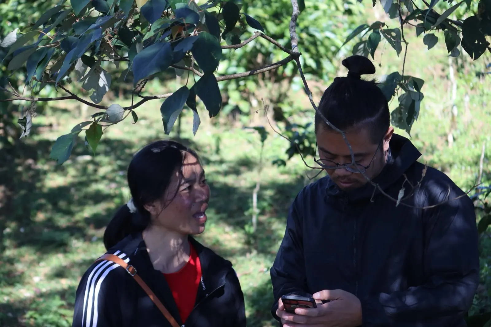
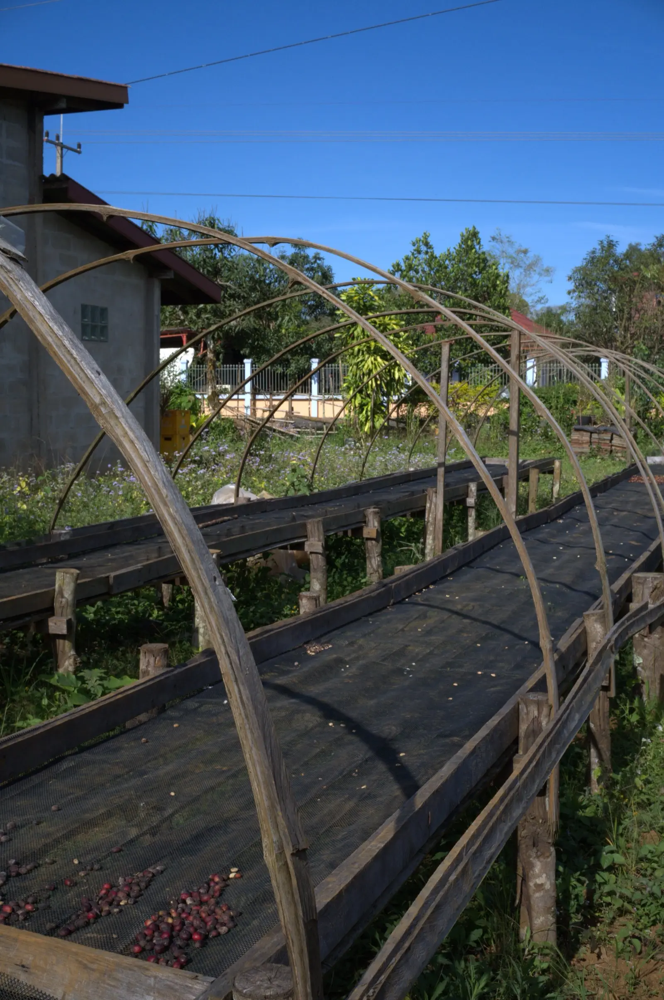

Coffee Project
ラオス南部 ボラベン高原 / チャンパサック県
ラオス南部ボラベン高原で、スペシャルティコーヒーの生産指導から輸出までを一貫して支援しています。現地農家と協働し、栽培技術の向上、品質管理の仕組みづくり、そして公正な価格での取引ルート構築に取り組んでいます。
2015〜
プロジェクト開始

Education Project
ラオス南部 チャンパサック県 パクセ
経済的・地理的理由で高校進学が困難な優秀な学生を支援する学生寮「坂雲寮」を2017年から運営しています。寮生には日本語教育や生活指導を提供し、大学進学や現地日系企業への就職を実現。学校建設支援にも取り組み、教育を通じてラオスの未来を担うリーダーを育成しています。
30名+
卒寮生
10名
現在在籍
2017〜
坂雲寮開始

AI × Agriculture
ラオス / 日本
AIやデータ分析を活用し、農業支援の高度化に取り組んでいます。テクノロジーの力で、より多くの農家に的確な支援を届けることを目指しています。
2025〜
プロジェクト開始

Subsidy Project
日本 / ラオス
彩の国さいたま国際協力基金、今井記念海外協力基金、大阪コミュニティ財団、LUSH、東芝国際交流財団など、国内外の助成金・補助金に積極的に申請し、採択された資金を活用して現地の支援活動やインフラ整備を推進しています。
10件+
採択実績